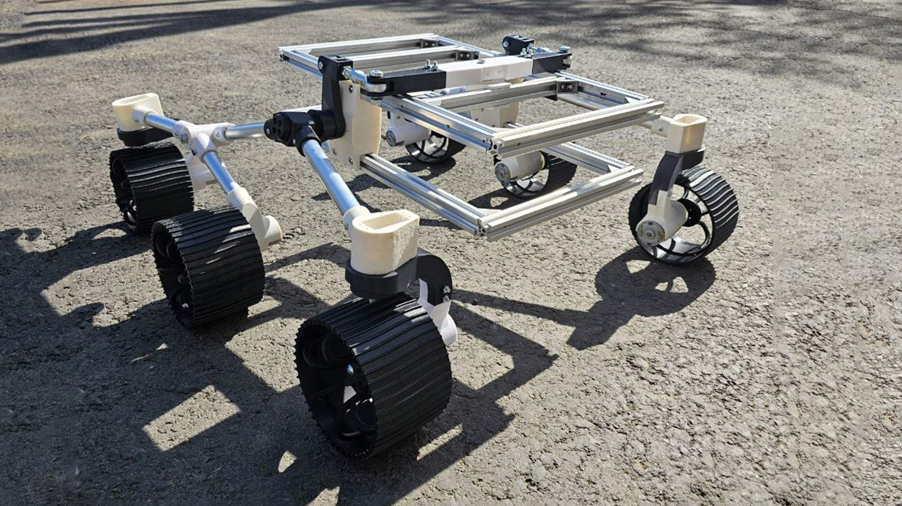

Российские учёные создали робота-поводыря
Специалисты из Невинномысского технологического института разработали робота-поводыря. Робот использует машинное зрение и языковую модель для ориентирования в пространстве и чтения информации с указателей и упаковок в магазинах. Прототип разработан и протестирован, сообщают "Известия".
"Робот предназначен для помощи людям с ограниченными возможностями — с нарушениями зрения. Он представляет собой решение, способное анализировать визуальные данные, полученные от машинного зрения, и использовать языковые модели GPT для интерпретации и генерации соответствующих команд или предупреждений", — рассказал изданию автор проекта Богдан Колесник.
Робот представляет собой подвижную платформу высотой около метра на шести колёсах. На верхней части робота закреплено несколько камер, которые позволяют ему "видеть" мир вокруг, и динамик для общения с человеком. Робот способен ориентироваться в пространстве, выбирая оптимальные маршруты и избегая препятствия, а также распознавать и читать тексты. За управление устройством отвечает встроенный компьютер.
По словам авторов проекта, целевой аудиторией устройства станут государственные учреждения, социальные службы и некоммерческие организации. Стоимость сборки прототипа составила около 70 тыс. рублей, а для запуска улучшенной версии с расширенным функционалом планируется привлечь инвестиции в размере 1 млн рублей.